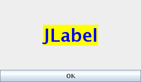
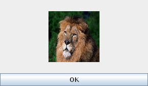
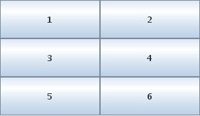
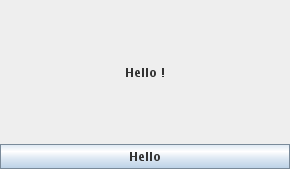

前回はクラスとオブジェクトの説明で，C言語と同様に文字だけの表示でしたが，今回はいよいよJavaでGraphical User Interface (GUI)を扱う方法について説明します．
Graphical User Interface (GUI)とは，ウィンドウやボタンなどのように画面に絵が表示され，それを使って操作を行う仕組みのことです．皆さんが使っているWindowsなどのソフトは，すべてGUIプログラムですね．一方，javacコマンドのようなターミナルから実行して出力が文字だけのプログラムは，Character-based User Interface (CUI)プログラムと呼ばれます．今までは，CUIプログラミングをずっと行なってきたということになります．さあ，ここからはGUIプログラミングです！
GUIのプログラムには，ボタン，スライダー，ラジオボタン，スライダー，メニューバーなど様々な部品が使われます．それらのGUI部品を組み合わせていくことによって自由に画面を設計して，GUIプログラムを構築することが可能です．GUI部品の集めたものをツールキットと呼んでいます．なお，GUI部品は自分で作ることも可能で，作り方についても次回以降説明します．まずは，すでに用意されている部品の使い方をマスターしましょう．
JavaのGUIのツールキットにはいろいろなものがありますが，Javaに標準で付属しているGUIツールキットには，以下の2種類があります．
AWTは最初のJavaのバージョンである1.0から存在したツールキットです．一方，Swingはバージョン1.2になってから追加されたAWTを拡張したツールキットです．本演習では，Swingを主に使いますが，まず最初にAWTについても少しだけ触れてみます．
まず最初は昔からあるAWTの使い方をみてみましょう．
AWTの一番基本的なプログラムは次のようになります．
import java.awt.*;
class AWTFrame {
public static void main(String[] args) {
Frame f = new Frame("AWT Frame");
f.setSize(300, 200);
f.setVisible(true);
}
}
タイトルが付いている独立したウィンドウをAWTではフレーム(frame)と呼びます．
まず，
Frame f = new Frame("AWT Frame");
で，Frameオブジェクトを1つ作ります．フレームオブジェクトを作るときに指定した"AWT Frame"はウィンドウのタイトルに表示される文字列です．
次に，作ったフレームオブジェクトのsetSizeメソッドを呼び出します．
f.setSize(300, 200);
setSizeメソッドが呼び出されると，フレームオブジェクトは自分の大きさを引数で指定された大きさにします．ここでは，横300ピクセル，縦200ピクセルにしています．
なお，setSizeはフレームの大きさだけを指定しているので，フレームは画面中のどこに表示されるか分かりません．一般的には左上に表示されることが多いと思います．setSizeメソッドの代わりにsetBoundsメソッドを用いると，画面中での表示位置も同時に指定できます．次の例では，画面上の左上を原点として(100,100)の位置を表示位置として，フレームのサイズを300x200にセットしています．
f.setBounds(100, 100, 300, 200);
最後に，setVisibleメソッドを引数trueで呼び出すことによって，フレームオブジェクトは実際に画面にウィンドウを表示します．
f.setVisible(true);
このsetVisibleメソッドを呼び出さないと画面には何も表示されませんので注意してください．
結局，上のプログラムを実行すると画面にウィンドウが表示されます．
実行してみると，通常のCUIのプログラムと異なり，一度フレームが表示されると，プログラムの実行が終了しないでそのままの状態になることに気づくと思います．フレームが表示されたということはsetVisibleが実行されており，mainメソッドの中身がすべて実行されたことになるのですが，終了はしません．これは，GUIプログラムが入力待ち(イベント待ち)状態になっているからです．一般的にGUIプログラムでは，画面が表示されるとユーザの入力待ちとなります．
このプログラムはフレームを表示しただけなので，フレームをクリックしても何も起こりません．ユーザの入力に対して，何か反応するプログラムを作っていくことが，GUIプログラミングとなります．なお，このプログラムを終了するには，ターミナルで Ctrl+C を押して下さい．フレームの上部の × ボタンを押してもフレームは消えますが，プログラム自体の実行は終了しません．
なお，1行目はAWTのライブラリを利用するために必要な記述ですので忘れないようにしましょう．とりあえず，C言語での#includeと同じ様なものであると理解しておいて構いません．
では次に，より高機能なSwingを使ってみます．スライダーやツールバーなどGUI部品が大幅に追加され，さらにウィンドウの見た目を自由に変更できるなど，機能が大幅に強化されています．これ以降はAWTは使いませんので，以下のSwingの使い方の基本を覚えましょう．
先ほどのAWTのサンプルプログラムと同じ動作をするプログラムをSwingを使って実現すると次のようになります．
import javax.swing.*;
import java.awt.*;
class SwingFrame {
public static void main(String[] args) {
JFrame f = new JFrame("Swing Frame");
f.setSize(300, 200);
f.setVisible(true);
}
}
ほとんど同じです．違いは，1行目に
import javax.swing.*;
が追加されたことと，FrameがJFrameに変わったことだけです．先ほど説明したsetBoundsメソッドも同じように使えます．なお，importについては，必ず2行目にある
import java.awt.*;
も書くようにして下さい．Swingは，一から作りなおしたライブラリではなくAWTを拡張したものであるため，AWTから完全に独立しておらず，AWTの機能を利用してつくられています．この2行のimport文は，Swingを使う場合に必ず必要と覚えてしまいましょう．
Swingのすべての部品のクラス名は，JFrameクラスのようにJで始まる名前に統一されています．例えば，AWTにはLabel, Panelというクラス名の部品がありますが，SwingではそれぞれJLabel，JPanelという名前になります．
先ほどはJFrameのオブジェクトを生成して，JFrameを画面上に表示してみました．しかしながら，実際のプログラミングでは，このようには記述せずに，JFrameを継承(inheritance)したクラスを作成して，利用することが一般的です．
継承の詳しい説明は次の章で行いますが，簡単に説明すると，すでにあるクラスを元に新しいクラスを作る方法です．新しいクラスを作るときに，差分だけを記述すれば良くなります．
JFrameクラスを継承したNewFrameクラスを定義するには次のようになります．
class NewFrame extends JFrame {
/* 追加されたフィールド */
public NewFrame() {
/* コンストラクタの中身 */
}
/* 追加されたメソッド */
}
JFrameを継承したこのNewFrameクラスは，JFrameのすべてのフィールドとメソッドを保持して，さらに，追加されたフィールドと，追加されたメソッド，新たに記述されたコンストラクタをもつ新しいクラスとして定義されます．
Swingによるプログラム開発では，JFrameを継承したクラスを用意して，それに新しいメソッドを追加して機能拡張して，利用することが一般的です．では，この継承を使って，先ほどのサンプルを書きなおしてみます．
import javax.swing.*;
import java.awt.*;
class NewFrame extends JFrame {
public NewFrame() {
this.setTitle("NewFrame");
this.setSize(300, 200);
this.setVisible(true);
}
public static void main(String[] args) {
new NewFrame(); // NewFrameオブジェクトを生成します．生成すると，
// コンストラクタ内の処理が自動的に実行されます．
}
}
先ほどはmainメソッドでJFrameオブジェクトを生成して，そのメソッドのsetSize, setVisibleを呼び出していたのですが，こちらの書き方では コンストラクタ内で，
this.setsize(300, 200); this.setVisible(true);
と記述されています．このthisは，自分自身のこと，つまり，NewFrameの自身のオブジェクトを表します．
じつは継承しているので，JFrameのメソッドは，NewFrameのメソッドでもあるのです．ですので，NewFrameクラス内のメソッドからは，thisをつけてJFrameのメソッドを呼び出すことが可能になっています．なお，this.setTitleはフレームの名前を設定するメソッドです．new JFrame(<フレーム名文字列>)で，JFrame生成時に同時に設定していたのを，メソッドで設定するようにしました．
このようにコンストラクタに必要なことを書いておけば，NewFrameオブジェクトを生成するとコンストラクタ内の処理が自動的に実行されるので，mainメソッドではなんと，
new NewFrame();
の一行だけで済んでしまいます．NewFrameオブジェクトを生成しますが，その後，特に参照する必要がないので，変数に代入することもしません．
このあとは，コンストラクタの中身を充実させて，色々な機能をもったリッチなNewFrameにして行きましょう！
ここでNewFrameに機能を一つ追加しておきましょう．デフォルトでは JavaのGUIでは，ウィンドウの左上の × 印をクリックしてウィンドウを閉じても，プログラムは終了しません．ウィンドウを閉じるとプログラムの動作が終了するようにするには，JFrameのメソッドのsetDefaultCloseOperationの引数にJFrame.EXIT_ON_CLOSEを指定して呼び出しておく必要があります．このJFrame.EXIT_ON_CLOSEというは，JFrameクラス内で定義された定数です．JavaにはC言語の様なグローバル変数はありませんので，必ずどこかのクラスの内部でpublic static final <型名(intやdoubleなど)>として定義して，利用する場合も<クラス名>.を定数名の前に付ける必要があります．具体的には，
public static final int EXIT_ON_CLOSE = 3;
と定義されています．
setVisibleの前に以下の1行を追加しましょう．これもおまじないだと思って必ず付けるようにしましょう．
this.setDefaultCloseOperation(JFrame.EXIT_ON_CLOSE);
ウィンドウが出るだけでは面白くありません．次に，ボタンを一つ追加してみましょう．次のようになります(灰色の部分が追加したところです)．
import javax.swing.*;
import java.awt.*;
class ButtonFrame extends JFrame {
public ButtonFrame() {
this.setSize(300, 200);
this.setDefaultCloseOperation(JFrame.EXIT_ON_CLOSE);
JButton b = new JButton("OK");
this.add(b, BorderLayout.SOUTH);
this.setVisible(true);
}
public static void main(String[] args) {
new ButtonFrame();
}
}
JButtonオブジェクトをフレームに追加してみました．
灰色でハイライト表示してある箇所の最初の行が，JButtonオブジェクトの生成です．
JButton b = new JButton("OK");
JFrameオブジェクトの生成とまったく同じですね．そして，次の行で，JFrameのメソッドのaddメソッドで，JFrameオブジェクトに対して，ボタンオブジェクトを貼り付けています．
JFrameに部品を追加する場合，デフォルトでは，上・下・左・右・中央（北・南・西・東・中央）の5箇所に追加できることになっています．上のプログラムでは，BorderLayout.SOUTHという定数で，下（南）を指定しています．他にも，NORTH，EAST，WEST，CENTERがあります．位置関係は以下のようになります．なお，この定数のクラス名はBorderLayoutとなって，最初にJが付いていませんね．実は，BorderLayoutクラスはAWTのクラスなのです．Swingでは，部品の配置に関するレイアウト関係のクラスは，昔からあったAWTのクラスがそのまま使われていますのです．他には色を表現するColor関係のクラスや，ボタンを押した時に処理を行うイベント処理関係のクラスもAWTのものを使います．
実際に上のプログラム(Swing版)を動かしてみてください．また，プログラム中のSOUTHをNORTH，WEST，EAST，CENTERに変えてみてください．どうなりましたか？ また，ボタンやフレームに表示されるテキストもいろいろ変えてみてください．
では次に，JButton以外にもう一つ部品を紹介しましょう．
JLabelを使ってみましょう．JLabelは文字を表示するだけの部品で表示専用です．JButtonは実はボタンを押すと何か動作をさせることが可能(後で方法を説明します)ですが，JLabelはただ表示するだけです．ただし，一度表示した後に動的に表示する文字を変更することは可能です．これを利用して，練習問題でおみくじプログラムを作ってもらいます．
import javax.swing.*;
import java.awt.*;
class LabelFrame extends JFrame {
public LabelFrame() {
this.setSize(300, 200);
this.setDefaultCloseOperation(JFrame.EXIT_ON_CLOSE);
JButton b = new JButton("OK");
this.add(b, BorderLayout.SOUTH);
JLabel l = new JLabel("JLabel");
this.add(l, BorderLayout.CENTER);
this.setVisible(true);
}
public static void main(String[] args) {
new LabelFrame();
}
}
これだと，JLabelの文字が左寄せで表示されてしまいます．センタリングしたいときは，
JLabel l = new JLabel("JLabel", JLabel.CENTER);
とします．他に，JLabel.LEFT，JLabel.RIGHTが指定できます．
では，文字サイズを変えるのはどうすればいいでしょう．JLabelのメソッドを使うこともできますが，もっと簡単な方法がJLabelにはあるのです．なんと，HTMLを表示することができるのです．(HTMLを用いない，Java本来のメソッドによる方法はFAQに書きました．)
例えば，次のようにJLabelオブジェクト生成の行を変更してみてください．(長いので文字列を2行に分けて結合しています．HTML中のクォーテーションは，シングルクォーテーションを使うことに注意して下さい．)
JLabel l =
new JLabel("<html><span style='font-size:36pt; color:blue; "
+ "background-color:yellow;'>JLabel</span></html>", JLabel.CENTER);

文字列の<html>と</html>で囲まれた部分はHTMLとして解釈され，表示されます．HTMLはいろいろあり過ぎて，ここでは説明しきれません．興味のある人は，HTMLクイックリファレンスやGoogleで検索するなどして，各自調べてみてください．ただし，すべてのHTMLに対応している訳ではなさそうです．
ライオン画像を右クリックでダウンロードして下さい．画像表示のHTMLタグを使って，
JLabel l = new JLabel("<html><img src='file:lion.jpg' "
+ "width='100' height='100'/></html>", JLabel.CENTER);

のように画像も含められます．これは，簡単ですね．ネットに繋がっていれば，file:lion.jpgの代わりに，http://mm.cs.uec.ac.jp/lion.jpgのように画像ファイルのURLを指定して表示することも可能です．
LabelFrameのプログラムを改良して，様々な大きさ，色の文字を表示してみてください．使っていないNORTH，WEST，EASTにも文字や写真を入れてみましょう．
先ほどは，SwingのGUI部品としてJButtonを使ってみましたが，他にもSwingにはたくさんのGUI部品があります．
JDialog*JFrame*JButton*JToggleButton*JCheckBox*JRadioButton*JColorChooser**JComboBox*JFileChooser*JLabel*JList*JOptionPane**JPanel*JScrollBar*JInternalFrame**JLayeredPane**JDesktopPane**JPopupMenu**JProgressBar**JScrollPane*JSplitPane**JTabbedPane**JSlider**JTable**JToolBar**JToolTip**JTree**JEditorPane**JTextArea*JTextField*JPasswordField***はAWTにも同等のクラスがある部品，**はSwingで新たに追加された部品です．とても多くの部品があることが分かると思います．
とても多くて全ては説明しきれませんので，参考になるWebページを紹介しておきます．
外部のWebページや，少し古い本ではフレームオブジェクトに部品を貼り付けるときに，getContentPane()メソッドが使われていることがありますが，これは Javaバージョン1.5から不要になりました．そのまま付けたままコンパイルして実行しても結果は，付けない場合と同じですので，昔の名残りだと思って無視して下さい．つまり，以下の2つの動作は全く同じになります．
this.add(b, BorderLayour.SOUTH);
this.getContentPane().add(b, BorderLayour.SOUTH);
今までは部品を置く場所がNORTH，SOUTH，EAST，WEST，CENTERの5つしかなかったので，最大5個までしか配置できませんでした．これでは，実用的なアプリケーションを作ることは困難です．
Swingでは，レイアウトマネージャという仕組みで部品を適切な位置に自動配置します．レイアウトマネージャには何種類かあって，何も指定しないとBorderLayoutというレイアウトマネージャになっています．BorderLayoutは，上下左右と中央に部品を配置するというレイアウトマネージャです．これは，すでに上で試してみました．
ここでは，別の GridLayoutというレイアウトマネージャを使ってみます．GridLayoutは，部品を同じ大きさの格子に並べるというものです．追加した順に，左から右，上から下に並べていきます．
利用するには，JFrameに部品をaddする前に以下のようにGridLayoutを指定します．
this.setLayout(new GridLayout(3, 2));
GridLayoutを作るときに，縦，横の格子の個数を指定します．縦，横の順番なので注意しましょう．
このプログラムでは，縦3個，横2個と指定しています．(どちらか一方を0にすることができます．そうすると，指定しなかったことになり，追加した部品の個数から計算されます．)
では，ボタンを6個配置してみましょう．一々書くのは面倒なので，6回forループで繰り返してみます．なお，<数値型変数> + ""で文字型に自動変換されますので，それを利用してボタンの文字列を指定しています．
import javax.swing.*;
import java.awt.*;
class GridFrame extends JFrame {
public GridFrame() {
this.setSize(300, 200);
this.setDefaultCloseOperation(JFrame.EXIT_ON_CLOSE);
this.setLayout(new GridLayout(3, 2));
for (int i = 1; i <= 6; i++)
this.add(new JButton(i + ""));
this.setVisible(true);
}
public static void main(String[] args) {
new GridFrame();
}
}

他に，BoxLayout，CardLayout，FlowLayout，GridBagLayoutなどがあります．
GridFrameのプログラムを改良して，グリッドのサイズを自由に変更して，様々な大きさ，色の文字を表示してみてください．
上のプログラムでボタンを表示しました．そのボタンを押すことはできましたが，押しても何も起きませんでした．何も起きないとつまらないので，ボタンを押すとメッセージが表示される例題を作ってみましょう．
次のようになります．
import javax.swing.*;
import java.awt.*;
import java.awt.event.*;
class HelloFrame extends JFrame implements ActionListener {
public HelloFrame() {
this.setSize(300, 200);
this.setDefaultCloseOperation(JFrame.EXIT_ON_CLOSE);
JButton b = new JButton("Hello");
this.add(b, BorderLayout.SOUTH);
b.addActionListener(this);
this.setVisible(true);
}
public void actionPerformed(ActionEvent ev) {
System.out.println("Hello");
}
public static void main(String[] args) {
new HelloFrame();
}
}
JButtonを押した，などのようなGUI画面に対するユーザからの入力を処理するこ
とをイベント処理(event handling)と言います．GUIプログラミングの動作は，イベントを処
理することによって行われていきます．こうしたプログラミングのスタイルを
イベント駆動プログラミング(event-driven programming)と言います．
Swingでは，イベント処理には AWTのイベント処理機能を使いますので，
import java.awt.event.*;
の一文を3つ目のimport文として追加することが必要ですので，忘れないようにしましょう．
JButtonは，押されるとあらかじめそのJButtonに登録しておいたオブジェクトのactionPerformedというメソッドを実行することになっています．
登録は，JButtonのaddActionListenerメソッドで行ないます．上のプログラムでは，ハイライト行の3行目で登録しています．
addActionListenerの引数はthisになっています．thisは自分自身という意味で，HelloFrameオブジェクトのことになります．ということは，JButtonを押すと，HelloFrameのactionPerformedが呼び出されることになります．actionPerformedはユーザが呼び出すのではなく，Swingライブラリの中からJButtonが押される度に自動的に呼び出されます．なお，actionPerformedメソッドの関数名と引数の型は，
public void actionPerformed(ActionEvent ev)
と決まっていますので，これ以外に変更するとボタンが押されても呼び出されなくなりますので，注意して下さい．
実は，addActionListenerで登録できるオブジェクトは何でも言いわけでなくて，クラス宣言の後にimplements ActionListener が付いている必要があります．これは，インタフェース(interface)というものですが，次の章で詳しく説明します．
さあ，おみくじプログラムまであと一歩です．上記のHelloFrameだと，ボタンを押すと文字はターミナルに表示されます．これだとちょっとがっかりですね．では，フレーム内に表示させる方法をご説明します．
JLabelの中身を動的に変更できればいい訳です．文字列をJLabelにセットするには，setTextメソッドを使います．これを使うと，以下のようになります．ポイントは，JLabelをフィールド変数にして，コンストラクタ以外の他のメソッド(actionPerformed)からも参照できるようにすることです．
import javax.swing.*;
import java.awt.*;
import java.awt.event.*;
class HelloFrame extends JFrame implements ActionListener {
private JLabel label;
public HelloFrame() {
this.setSize(300, 200);
this.setDefaultCloseOperation(JFrame.EXIT_ON_CLOSE);
JButton b = new JButton("Hello");
this.add(b, BorderLayout.SOUTH);
label = new JLabel(" ", JLabel.CENTER);
this.add(label, BorderLayout.CENTER);
b.addActionListener(this);
this.setVisible(true);
}
public void actionPerformed(ActionEvent ev) {
label.setText("Hello !");
}
public static void main(String[] args) {
new HelloFrame();
}
}

さあどうですか？フレームの真ん中に「Hello!」が表示されましたね．では，おみくじプログラムの課題に行きましょう！
ボタンを押すとおみくじが引けるプログラムを作ってください．HelloFrameのactionPerformedメソッドの中身を書き換えるだけでOKです．
random()メソッドを用いると乱数を得ることができます．次のようにすると，変数rに0.0から1.0までの乱数が一つ得られます．
double r = Math.random();
この乱数を使って，ボタンを押すと3通り以上の異なる結果が表示されるGUI版のおみくじプログラムを作ってください．
例えば次のようにします(この通りである必要はまったくありません)．
あとは，ボタンが押されるたびに呼ばれるactionPerformedの中で乱数を発生させて，その値に応じて，
label.setText("good");
などとJLabelのテキストを変更するだけです．もちろん，日本語でもかまいませんし，HTMLを使って文字の色，大きさを変えたり，文字の代わりに画像を表示してみてもOKです．また，実はJButtonの表示文字もsetTextによって動的に変えることも可能ですし，JButtonの文字をHTMLで修飾表示することも可能です．
では，楽しいおみくじプログラムにしてみてください．
前の章では GUIプログラミングで，Javaでの標準GUIツールキットであるSwingの基本的な使い方を学習しました．JFrameにGUI部品を追加していくことで，簡単にGUIプログラムが書けることが分かったと思います．
GUIプログラミングの説明の中で継承，インタフェースという新しい用語が出てきました．さらにそれに関連したextendsやimplementsという新しい構文も出てきました．前の章ではGUIプログラミングが主題でしたので，これらの新しい用語はとりあえず置いておいて，GUI版おみくじプログラムを完成させましたが，今回は，オブジェクト指向プログラミングにおいて重要な概念である継承とインタフェースについて学んで行きましょう．
継承とインタフェースはクラスを定義するときに用いる考え方ですので，新しい内容の説明に入る前に，まず前々回のクラスの話の復習をしておきましょう．
前回作ったStudentクラスは以下のようになっていました．class <クラス名>で最初にクラス名を定義して，フィールド，コンストラクタ，メソッドからなる中身を記述します．
class Student {
// フィールド （private なので外部からアクセス不可）
private String id; // 学籍番号
private String name; // 名前
private int grade; // 成績
// コンストラクタ (オブジェクト生成時に値を初期化します)
public Student(String i, String n, int g) {
id = i; name = n; grade = g;
}
// メソッド (外部からは <オブジェクト変数名>.print() で呼び出せる)
public void print() {
System.out.println("ID : " + id);
System.out.println("Name : " + name);
System.out.println("Grade: " + grade);
}
}
フィールドには，そのオブジェクト内で必要なデータを記憶するための変数を記述します．ここは，通常の変数型(プリミティブ型)のint，doubleなどに加えて，オブジェクト型の変数も書くことができます．オブジェクト型の変数とは，オブジェクトの雛形であるクラスから生成したオブジェクトを記憶しておくための変数で，StringやJLabelのようなJavaのライブラリに用意されているクラスの型の変数に加えて，Studentのような自分で定義したクラスの型の変数が利用できます．
コンストラクタはメソッドの一種ですが，特殊なメソッドで，メソッド名は常にクラス名と同一で，通常のメソッドと違って値を返さないので，関数としての型は記述しません．public <クラス名>(<引数>, ...)のように書きます．
メソッドは，<オブジェクト変数名>.<メソッド名>(...)で呼び出すことができます．メソッドもprivateを付けることができますが，その場合は同じクラス内の他のメソッドからしか呼び出せなくなります．
それでは，新しい内容に移りましょう．
前の章では，以下のようなプログラムをSwingによるGUIプログラムのひな型として利用しました．
import javax.swing.*;
import java.awt.*;
class NewFrame extends JFrame {
public NewFrame() {
this.setTitle("NewFrame");
this.setSize(300, 200);
this.setVisible(true);
}
public static void main(String[] args) {
new NewFrame();
}
}
このプログラムの中では継承が利用されています．class NewFrameの後の，
extends JFrame
が継承を使うという宣言になります．継承は「受け継ぐ」という意味ですが，Javaでは単に受け継ぐだけではなく，受け継いでさらに拡張することができます．そのため「拡張する」という意味の動詞extendの3人称単数系のextendsがJavaの構文として用いられます．
class NewFrame extends JFrame {
という記述は，「クラスNewFrameはJFrameを拡張して定義します」ということを表しています．JFrameはJavaの標準ライブラリのSwingに含まれるクラスで，NewFrameはこれを拡張した物になります．継承を使った場合，元のクラスは親クラス，新しく定義するクラスを子クラスと言います．
親クラスと子クラスの関係は，次のようになります．
privateフィールドには直接はアクセスできません．アクセスするには，親クラスで定義されたメソッドを利用する必要があります．private以外のすべてのメソッドを持っています．ただし，親クラスのコンストラクタは継承されません．コンストラクタは子クラスで独自に定義する必要があります．
つまり，NewFrameは，自分で定義しているmainメソッドに加え，JFrameの膨大なメソッドを併せ持ったクラスであるということです．また，privateなため直接はアクセスできないフィールドも含めて，すべてのJFrameのフィールドも受け継いでいます．
そのため，以下のようにthisで表現される自分自身のオブジェクトに対して，setTitleやsetSizeを呼び出して，フレームのタイトルやフレームサイズを設定することが可能です．この様に親クラスから受け継いだメソッドを呼び出すことによって，子クラスであるNewFrameからは直接アクセス不可能な，親クラスでprivateになっているフィールドの値を変更することが可能になります．
public NewFrame() {
this.setTitle("NewFrame");
this.setSize(300, 200);
this.setVisible(true);
}
JFrameを親クラスとする例では，親クラスが標準ライブラリのクラスでした．ここでは，親クラスも自分で定義して，それを継承した子クラスを作ってみましょう．
継承を使うと，似たようなクラスがすでにある場合に，2つのクラスの差だけを記述するということが可能になります．
次のように書きます．
class Oya {
/* 中身は省略 */
}
class Kodomo extends Oya {
/* 中身は省略 */
}
クラスOyaという親クラスがあったときに，それを元にして，Oyaクラスとの違いだけを書いてKodomoクラスという子クラスを作ることができます．その場合，Kodomoクラスを定義するときに元になるクラスをextendsで指定します．
元になるクラスである親クラスをスーパークラス(super class)，extendsしたクラスである子クラスをサブクラス(sub class)と呼ぶこともあります．
子クラスのオブジェクトは，親クラスのオブジェクトが持っている変数とメソッドをすべて持ち，さらに子クラスで追加された変数とメソッドも持ちます．例えば，
class Oya {
private int x = 0;
public void setX(int x0) { x = x0; }
public void printX() {
System.out.println("Oya: x = " + x);
}
public void plusX() {
x++;
}
}
class Kodomo extends Oya {
public void printX1() {
System.out.print("Kodomo: ");
printX();
}
}
class Oyako {
public static void main(String[] args) {
Kodomo k = new Kodomo();
k.setX(10); // Oyaのフィールドに値をセット
k.printX(); // Oyaのメソッドを直接呼び出し
k.printX1(); // Kodomoのメソッド経由で結果を表示
k.plusX(); // +1
k.plusX(); // +1
k.printX(); // Oyaのメソッドを直接呼び出し
k.printX1(); // Kodomoのメソッド経由で結果を表示
}
}
となっていた場合，Kodomoクラスのオブジェクトは，メソッドprintX1()に加えて，Oyaクラスで定義された変数xとメソッドsetX()，printX()，plusX()も持っていることになります．
KodomoクラスのprintX1メソッドの中身を見てください．printX()が書かれていて，親のメソッドが呼ばれています．このように子クラスから，親クラスのメソッドを呼び出すことができます．
では，親クラスのフィールドの変数xは子クラスから参照したり値を変更したりできるでしょうか？上記の例の場合は，private int x;と，親の変数xがprivateになっていますので，子クラスと言えどもアクセスすることは許されていません．
この場合は，privateの代わりにprotected修飾子を使います．protectedを付けることによって，次の例のように継承したクラスからは直接アクセスすることが可能となります．
class Oya2 {
protected int x = 0;
public void setX(int x0) { x = x0; }
public void printX() {
System.out.println("Oya: x = " + x);
}
public void plusX() {
x++;
}
}
class Kodomo2 extends Oya2 {
public void printX1() {
System.out.print("Kodomo: ");
printX();
}
public void plusX10() {
x += 10; // 親クラスのフィールドの変数xに直接アクセスできます．
}
}
class OyakoProtected {
public static void main(String[] args) {
Kodomo2 k = new Kodomo2();
k.setX(10); // Oyaのフィールドに値をセット
k.printX(); // Oyaのメソッドを直接呼び出し
k.printX1(); // Kodomoのメソッド経由で結果を表示
k.plusX(); // +1
k.plusX10(); // +10
k.printX(); // Oyaのメソッドを直接呼び出し
k.printX1(); // Kodomoのメソッド経由で結果を表示
}
}
protectedは，継承したクラスからアクセス可能という意味ですが，厳密には「同一パッケージ内と，そのクラスを継承した子クラス内からアクセス可能」という意味になります．「同一パッケージ内」というのは，特にパッケージを意識しないでプログラミングするとすべてのクラスはパッケージなしのクラス，という扱いで，すべて「同一パッケージ内」になりますので，実質的にはprotectedもpublicもあまり違いがありません．ですが，外部からはアクセスされたくないけど，子クラスからはアクセス可能にしたいということを明記するためにも，そのような場合はpublicよりもprotectedを使ったほうがいいでしょう．
では次に，子クラスで親クラスと同じメソッドを定義することはできるでしょうか？答えは「できる」です．その場合，親クラスのメソッドを子クラスで再定義したと言います．この場合，子クラスでは，再定義したメソッドが優先され，普通に呼び出すと子クラスで再定義したメソッドが使われます．
このような，子クラスによる親クラスのメソッドの再定義をオーバーライド(override) といいます．
class Oya3 {
protected int x = 0;
public void setX(int x0) { x = x0; }
public void printX() {
System.out.println("Oya: x = " + x);
}
public void plusX() {
x++;
}
}
class Kodomo3 extends Oya3 {
public void plusX() { // 親クラスのメソッドと同じメソッド名です．
x += 10;
}
}
class OyakoOverRide {
public static void main(String[] args) {
Kodomo3 k = new Kodomo3();
k.setX(10); // Oyaのフィールドに値をセット
k.printX(); // Oyaのメソッドを直接呼び出し
k.plusX(); // +1と+10のどちらでしょう？
k.printX(); // Oyaのメソッドを直接呼び出し
}
}
親クラスの同じメソッドもなくなったわけではなく隠れているだけなので，superを前に付ければ呼び出すことができます．例えば，先ほどのサンプルコードのKodomo3クラスにsuper.plusX();を以下のように追加してみましょう．
public void plusX() {
super.plusX();
x += 10;
}
Oya3クラスのメソッドplusX()は，Kodomo3クラスのメソッドplusX()によってオーバライドされていましたが，Kodomo3クラスのメソッド内からは super.plusX();とすることによって親クラスのplusX()を呼び出すことが可能となります．
第1回目のStudentクラスを継承を使って拡張してみましょう．
3年生になるとコース分けが行われます．また，4年生になるとコース内で研究室配属が行われ，指導教員が決まって所属研究室が決まります．そこで，3年生用のStudent3クラスと，4年生用のStudent4クラスを作ってみましょう．
Studentクラスに，コース名
private String course; // コース名
を追加したStudent3クラスをまず作りましょう．setCourseメソッドもsetIdメソッドと同じように追加してください．また，printメソッドをオーバライドして，Student3で追加された情報が表示されるようにprintメソッドを再定義してください．この時，superを使って親クラスのprintも利用しましょう．
さらに，Student3クラスに所属研究室の指導教員名
private String supervisor; // 指導教員名
を追加したStudent4クラスを作成して下さい．同様にsetSupervisorメソッドを追加して，printメソッドをオーバライドし，Student4クラスで追加された情報が表示されるようにprintメソッドを再定義してください．
mainメソッドは以下のように定義してください．「...」は適当な文字列や数値を指定してください．
class Main {
public static void main(String[] args) {
Student3 st3 = new Student3();
Student4 st4 = new Student4();
st3.setId(...);
st3.setName(...);
st3.setGrade(...);
st3.setCourse(...);
st4.setId(...);
st4.setName(...);
st4.setGrade(...);
st4.setCourse(...);
st4.setSupervisor(...);
System.out.println("[3年生]");
st3.print();
System.out.println("[4年生]");
st4.print();
}
}
どうしても分からない人は，を押してみてください．Student3クラスの例が表示されますので，これを参考に Student4クラスを作ってみてください．ほとんど同じように書けばStudent4クラスも完成します．
継承について説明したので，次にコンストラクタについて補足をしておきましょう．先ほどは以下のように説明しました．
親クラスのコンストラクタは継承されません．引数付きのコンストラクタは子クラスで独自に定義する必要があります．引数なしのコンストラクタは継承されます．
例えば，
class A {
private int x = 0;
public A() {
x = 10;
}
public A(int n) {
x = n;
}
public void print() {
System.out.println(x);
}
}
class B extends A {
// 省略
}
というクラスがあったとして，mainメソッドで
B b = new B(); b.print();
とすると，親クラスであるクラスAのコンストラクタA()が呼ばれて，10と表示されます．
一方，引数付きのコンストラクタは継承されませんので，
B b = new B(10);
というプログラムを実行しようとすると，クラスBには引数付きのコンストラクタはないため，コンパイルエラーになります．
引数付きのコンストラクタは，次のように，継承したクラスでも定義する必要があります．
ただし，次の例のように，親クラスのprivateのフィールドには，子クラスから値を直接セットすることができません．そこで，子クラスのコンストラクタから，親クラスのコンストラクタを呼び出すための特殊な名前superが用意されています．これを使って，
class A {
private int x = 0;
public A() {
x = 10;
}
public A(int n) {
x = n;
}
public void print() {
System.out.println(x);
}
}
class B extends A {
public B(int n) {
super(n); // 親クラスのコンストラクタをA(n)で呼び出す
// ここにはBクラス特有の初期設定などを書く
}
}
と書くことができます．通常は，super(n)で親クラスのコンストラクタを呼び出した後に，子クラス特有の初期設定などを書きます．なお，このsuperは，コンストラクタの先頭でしか呼び出すことができませんので注意してください．例えば，
class B extends A {
private int y;
public B(int n) {
y = 0;
super(n); // 親クラスのコンストラクタをA(n)で呼び出す
}
}
とかくと，
B.java:17: super の呼び出しはコンストラクタの先頭文でなければなりません。
super(n); // 親クラスのコンストラクタをA(n)で呼び出す
^
エラー 1 個
というようにコンパイル時にエラーになってしまいます．
同様に，引数なしのコンストラクタでも，子クラス独自の初期設定を行いたい場合は，以下のように，引数ありの場合と同様にsuper()を使って，先に親のコンストラクタ
を呼び出してから，子クラス独自の設定を行います．
class B extends A {
private int y;
public B() {
super(); // 親クラスのコンストラクタをA()で呼び出す
y = 0;
}
}
親クラスのコンストラクタ呼び出しの他に，this(...)とすることで，自分のクラスの別のコンストラクタ（別の引数を持つ）を呼び出すことも可能です．こちらもコンストラクタの先頭にしか書くことができません．
this(...)は例えばこんな風に使います．
class A {
private int y;
public A() { // コンストラクタ1
this(0); // コンストラクタ2を呼び出す．xにデフォルト値0を指定．
}
public A(int x) { // コンストラクタ2
this(x, 0); // コンストラクタ3を呼び出す．yにデフォルト値0を指定．
}
public A(int x, int n) { // コンストラクタ3
super(x);
y = n;
}
}
最も詳細に設定できる(つまり，引数の数が多い)コンストラクタを用意し， 他のコンストラクタは，引数にデフォルトの値を指定して， 最終的に一番細かく指定できるコンストラクタを呼び出すという方法です． これはよく使われる方法です． なお，このように同じ名前で引数だけ異なるメソッドを用意することを， オーバーロード(overload)と言います． Javaでは，メソッドの名前が同じでも引数の型や数が異なる場合は，異なる メソッドとして扱います．オーバーロードは，コンストラクタだけでなく， 通常のメソッドでも可能です．子クラスで親クラスのメソッドを再定義する オーバーライドと似ていますが，まったく別の仕組みですので注意しましょう．
ところで，コンストラクタを定義する際，必ず親クラスや自クラスの別のコンストラクタを呼び出さなければいけない決まりになっています．そのため，次のようなルールがあります．
コンストラクタの先頭にsuper(...)かthis(...)がない場合には，親クラスの引数なしコンストラクタを呼び出すsuper()が入っているものとする(暗黙のsuper()の実行)．
ですので，super()は省略可能で，書いても書かなくても実際は同じなので，
class B extends A {
private int y;
public B() {
super(); // 親クラスのコンストラクタをA()で呼び出す
y = 0;
}
}
は，
class B extends A {
private int y;
public B() {
// super()がなくても，親クラスのコンストラクタがA()で自動的に呼び出される
y = 0;
}
}
と同じということになります．
また，引数なしのコンストラクタが自動的に呼び出されることを反映して， 次のようなルールもあります．
コンストラクタが存在しないクラスには，自動的に引数なしコンストラクタが追加される．このコンストラクタは，親クラスの引数なしのコンストラクタを呼び出すだけで他には何もしない．
ちなみに，先程「引数なしのコンストラクタは継承される」と説明していましたが，正確には，上のルールに従って自動的に追加された自クラスの引数なしコンストラクタが呼び出されています．呼び出されたコンストラクタ中でsuper()を呼び出すことしかしていないため，まるで親クラスの引数なしコンストラクタを継承しているかのように見えるだけです．
継承関係のあるクラスA，B，Cがあり，それぞれ次のようなコンストラクタを持っているとします．各コンストラクタは，呼び出されるとメッセージを表示します．
class A {
public A() {
System.out.println("A()");
}
}
class B extends A {
public B() {
System.out.println("B()");
}
public B(int x) {
System.out.println("B(int)");
}
}
class C extends B {
public C() {
System.out.println("C()");
}
public C(int x) {
super(x);
System.out.println("C(int)");
}
public C(double x) {
this();
System.out.println("C(double)");
}
}
この時，mainメソッドから次の文を実行すると，どのように表示されるでしょうか．その理由も説明してください．
new C();new C(1);new C(1.0);継承は何段にも重ねることが可能です．すなわち，あるクラスを継承したクラスを作り，そのクラスをさらに継承したクラスを作り……ということができます．
親クラスと子クラスの関係をつなげていくと，クラスの階層ができます．なお，Javaでは親クラスは1つしか指定できないので，必ず1つの子クラスは1つの親クラスを持つことになり，クラスの階層は木構造になります．
Javaの標準ライブラリは，すべて継承を利用して構築されているので，木構造で表現することが可能です．Javaでは，その階層の一番上にObjectというクラスがあります．
では，Javaの木構造を見てみましょう．これが木構造です．「木」をグラフィカルに表現している訳ではありませんが，代わりにインデント(字下げ)によって階層を表現しています．Javaの標準ライブラリは膨大で，下までスクロールするだけでも大変ですが，よくみるとすべてがObjectクラスの下にあるのが分かると思います．
全部見ると膨大過ぎて階層構造が分からないので，1つのクラスに注目して階層構造を見てみましょう．オンラインマニュアルの各クラスの説明のページに，そのクラスのすべての祖先にあたる親クラスの階層構造が書かれています．例えば，JFrameクラスのマニュアルを見ると，その最初の部分に次のようにJFrameクラスの祖先のクラスが書いてあります．(クラス名の前の，java.langやjava.awtなどはパッケージ名を表します．詳しく知りたい人は下記の【パッケージについて】を読んでください．)
java.lang.Object
|
+----java.awt.Component
|
+----java.awt.Container
|
+----java.awt.Window
|
+----java.awt.Frame
|
+---javax.swing.JFrame
JFrameクラスの親はAWTのFrameクラスで，その親はWindowクラスで，さらにその親はContainerクラス，Componentクラスで，一番上はObjectクラスになります．
この様に，すべてのクラスは，その親を辿っていくと最後はObjectクラスに到達します．
階層構造になっているのは，祖先のクラスの性質を子孫が利用するためです．上記の階層構造の場合は，どのように性質が引き継がれているか説明しましょう．
まずAWTのすべてのGUI部品がComponentのサブクラスになっています．ComponentはAWT部品の基本的な性質を定義していて，部品の大きさを決めるsetSizeや，表示状態をセットするsetVisibleなどGUI部品クラスの基本的なメソッドが定義されています．
Containerは，中に部品を入れることができる部品を定義しています．GUI部品をaddすることのできるGUI部品はすべてContainerのサブクラスになっています．Containerで中に部品を入れるメソッドは，add(Component c)というメソッドです．addの引数がComponentになっているということは，Componentおよびそのサブクラスは部品として追加できるということになります．ContainerはComponentのサブクラスですから，Container自身もContainerに追加できることになります．これによって，Containerの中にContainerが入るという，入れ子の構造(再帰的データ構造)が可能になります．
SwingのGUI部品は，AWTのContainerクラスを継承したJComponentを継承しています．SwingのGUI部品はContainerクラスを継承しているので，普通は行いませんが，AWTとSwingの部品を混ぜて使ったり，通常入れ物として使われない様な部品(例えばボタン)の中に部品をaddしたりも出来ます．
マニュアルを見てメソッドを探す時には，JFrameクラスは祖先のクラスのメソッドも使えるということに注意してください．祖先のクラスのメソッドを探すのを忘れてしまうことがよくありますので，注意しましょう．
例えば，JFrameのメソッドは，JFrame独自のメソッドだけではなく，すべての祖先のクラスのメソッドもJFrameのメソッドになっています．
Javaには膨大なクラスライブラリがあるので，すべて異なるクラス名を付けなければいけないとすると，使ってない名前を探すのが大変になってきます．そこで，Javaではパッケージ(package)という考え方を導入して，クラス名の衝突を防ぐとともに，クラスをパッケージにまとめて膨大なクラスの管理を容易にする工夫をしています．
Java内部では，<パッケージ名>.<クラス名>でクラスが管理されいて，同じクラス名でも パッケージ名が異なれば，異なるクラスと見なされます．クラス木構造のページの先頭に書いてある「パッケージ」とは，Javaがクラスを管理するためにつかうパッケージ名のことです．例えば，Swingのクラスはjavax.swingパッケージに属していて，例えば，JFrameは内部的にはjavax.swing.JFrameという名前で管理されています．
Javaには多くのパッケージがありますが，最も良く使われるjava.langパッケージ以外は，パッケージ内のクラスを利用するためimport宣言が必要になります．実際には，<パッケージ名>.<クラス名>として利用することも可能ですが，いちいちパッケージ名を書くのは面倒なので，通常はimport文を使います．
import javax.swing.*; import java.awt.*;
というimport宣言は，javax.swingパッケージの全クラス，java.awtパッケージの全クラスをパッケージ名の記述なしで利用するという宣言になります．.*はすべてのクラスと言う意味で，import javax.swing.JFrame;のようにクラス名を直接指定することも可能です．なお，標準のjava.langパッケージだけは，暗黙のうちにimport java.lang.*; が宣言されていることになります．
パッケージは，クラスの継承関係とは独立していますので注意してください．クラスの祖先をたどっていくと色々なパッケージに属するクラスが表れるのはそのためです．
すべてのクラスはObjectクラスの子孫クラスになっていると先程説明しました．実は，何もextendsしていないクラスも，Javaでは暗黙のうちにObjectの子クラスになっています．つまり，
class A {
...
}
というのは，実は
class A extends Object {
...
}
と等価です．
GUIプログラミングでは，Swingの次のようなメソッドを使いました．
JFrameのadd(引数が2つのadd)JFrameのsetTitleJFrameのsetVisibleJLabelのsetTextJButtonのaddActionListenerこれらのメソッドの大部分は，実際には親クラスで定義されたメソッドを使うことになります．
上記のメソッドは実際にはどのクラスで定義されたメソッドが使われるの でしょうか？ 複数候補がある場合は，引数の型があっているメソッドで， 最も近い祖先のクラスのメソッドが使われますので注意してください． このことを Swingのオンラインドキュメントで調べてください．
さらに，JLabelとJButtonの祖先クラスをjava.lang.Objectから順番にそれぞれ列挙してみてください．
インタフェースという仕組みは，JButtonを押した時に何か動作を行わせるために利用しました．そのときのプログラムは以下のようなものでした．
import javax.swing.*;
import java.awt.*;
import java.awt.event.*;
class HelloFrame extends JFrame implements ActionListener {
public HelloFrame() {
this.setSize(300, 200);
this.setDefaultCloseOperation(JFrame.EXIT_ON_CLOSE);
JButton b = new JButton("Hello");
this.add(b, BorderLayout.SOUTH);
b.addActionListener(this);
this.setVisible(true);
}
public void actionPerformed(ActionEvent ev) {
System.out.println("Hello");
}
public static void main(String[] args) {
new HelloFrame();
}
}
インタフェースを使うという宣言はclass HelloFrame extends JFrameの後の
implements ActionListener
で行われています．implementsの後のActionListenerはインタフェース(interface)と呼ばれます．一方，implementsは，インタフェースを実装(implementation)するという意味になります．インタフェースにはクラスが必ず持っているメソッド名(返り値の型，引数の型も含む) が書かれてあり，それを実装するとは，そのインタフェースに書かれたメソッドを新しく定義するクラスに必ず持たせる，という意味になります．つまり，
class HelloFrame implements ActionListener
と書くと，HelloFrameはActionListenerインタフェースに書かれているメソッドを持っています，という意味になります．
インタフェースとクラスは一見似ているのですが，実際には大きく違います．クラスではフィールドやメソッドの中身を定義するが，インタフェースではメソッド名のみを宣言するという点で異なります．C言語のプロトタイプ宣言に少し似ています．具体的には， ActionListenerインタフェースは
interface ActionListener {
void actionPerformed(ActionEvent e);
}
と定義されています．メソッドの中身は定義しないので，実際に書かれている内容はたったこれだけです．void actionPerformed(ActionEvent e)と書かれていますが，メソッドの中身は書かれておらず，単にメソッドの名前，返り値の型，引数の型が書かれているだけで，{ /*メソッドの中身*/ }の代わりにセミコロン(;)が最後に付いています．
なお，インタフェースで宣言されたメソッドは，すべて自動的にpublicになりますので，特にpublicと書く必要はありません．
このActionListenerを実装したNewFrameは，actionPerformedというメソッドを必ず持たなくてはいけません．持っていないとコンパイル時にエラーが出ます．例えば，HelloFrameでactionPerformedを削除してしまうと，次の様なエラーメッセージが出ます．このメッセージは，「インタフェースActionListener中で宣言された中身の定義されていないメソッドactionPerformedがHelloFrame中でオーバーライドされていません」ということを注意していて，つまり「actionPerformedをHelloFrame中で定義しなさい」いうメッセージです．継承では親のメソッドが子クラスでは定義しなくてもそのまま使えましたが，このように実装では実装したクラスの方で必ずメソッドを定義してやる必要があります．
HelloFrame.java:5: HelloFrame は abstract でなく、java.awt.event.ActionListener 内の abstract メソッド
actionPerformed(java.awt.event.ActionEvent) をオーバーライドしません。
class HelloFrame extends JFrame implements ActionListener {
^
エラー 1 個
では，インタフェースは一体どんなことに使えるのでしょうか？実は，インタフェースは，クラスと同様にインタフェース型の変数を定義することができます．インタフェース型の変数には，そのインタフェースを実装したオブジェクトを代入することができます．JButtonクラスでは，このことをうまく利用して，押すとactionPerformedが呼ばれる仕組みを実現していました．
JButtonのaddActionListenerメソッドの引数の型を見てみてください．
public void addActionListener(ActionListener l)
となっていることから，ActionListener型であることが分かると思います．このActionListenerが先ほど説明したようにクラスではなく，インタフェースです．つまり，addActionListenerの引数には，ActionListenerインタフェースを実装したクラスのオブジェクトを渡す必要があるということになります．
JButtonは，押されるとあらかじめJButtonに登録しておいたオブジェクトのactionPerformedという名前のメソッドを実行することになっています．
actionPerformedメソッドを持ったオブジェクトの登録が，JButtonのaddActionListenerメソッドで行なわれていたわけです．addActionListenerの引数はActionListener型ですので，必ずactionPerformedメソッドを持っていることが保証されています．ですので，ボタンが押されたときにJButtonの内部では安心してactionPerformedを呼び出すことができるのです．
もちろん，登録されたオブジェクトはactionPerformed以外のメソッドを持っていても構いませんが，オブジェクトをActionListener型として扱っているJButton内部では，actionPerformed以外のメソッドは一切使用しませんし，関知しませんので，あってもなくても構わないことになります．
次に，ActionListener以外のインタフェースの例を考えてみましょう．
例えば，写真を撮るtakePhotoメソッドを考えましょう．写真を撮ることは，携帯電話でもデジカメでもビデオカメラでもできます．そこで，それらのクラスをCellular，Camera，VideoCamとすると，それらはすべてtakePhotoメソッドを持っていることになります．また，Cellularクラスは電話を掛けるmakeCallメソッド，VideoCamクラスは動画を撮影するrecordMovieメソッドをもっていることとします．
さて，写真を撮る道具(オブジェクト)が必要になったとします．その時には，オブジェクトがmakeCallメソッドやrecordVideoメソッドを持っているかどうかは問題ではありません．オブジェクトがtakePhotoメソッドを持っていることだけが重要です．すなわち，写真を撮るにはそれぞれのオブジェクトの全公開メソッドの一部分だけが重要であり，残りのメソッドは違っていても構わないのです．
そこで，takePhotoという写真を撮影するのに不可欠なメソッドの部分集合に，「Photoインタフェース」という名前を付けることにします．そうすると，CellularもCameraもVideoCamも「Photoインタフェースを持っている」ということができます．
写真を撮影するには，
Photoインタフェースを持っている道具を用意すればよい
ということになります．
このように，Javaにはクラスの持つ公開メソッド集合の部分集合に名前を付けて使う仕組みが用意されています．それがインタフェース定義です．
インタフェース定義は，クラス定義と同じように書きますが，メソッドの本体は書かずに宣言だけを書きます．例えば，Photoインタフェースならば，次のようになります．
interface Photo {
void takePhoto();
}
インタフェースは，「クラスの持つ公開メソッドの部分集合」ですから，インタフェースで宣言したメソッドは，何も書いてなくてもpublicだと見なされます．publicと書いてももちろん構いません．
一方，あるクラスが，あるインタフェースを持つことはimplementsで宣言します．例えば，次のようになります．
class Cellular implements Photo {
public void makeCall() {
System.out.println("携帯電話で電話を掛けました．");
}
public void takePhoto() {
System.out.println("携帯電話で写真を撮りました．");
}
}
class Camera implements Photo {
public void takePhoto() {
System.out.println("デジカメで写真を撮りました．");
}
}
class VideoCam implements Photo {
public void recordMovie() {
System.out.println("ビデオカメラで動画を撮影しました．");
}
public void takePhoto() {
System.out.println("ビデオカメラで写真を撮りました．");
}
}
implementsで宣言することにより，Cameraは写真撮影ができることが保証されます．同様に，CellularやVideoCamも写真撮影が保証されます．
implements Photoと宣言すれば，そのクラスはPhotoインタフェースに含まれるすべてのメソッドを持っていないといけません．implements Photoと宣言しているのにtakePhotoメソッドがないと，先ほど述べたようにコンパイルエラーになります．
インタフェースは，クラスと同様にその型を持つ変数を宣言できます．例えば，Photo型の配列にPhotoインタフェースを実装したオブジェクトを代入して，次々にtakePhotoメソッドを呼び出すこともできます．
Photo l[] = new Photo[3]; l[0] = new Cellular(); l[1] = new Camera(); l[2] = new VideoCam(); for(int i = 0; i < 3; i++) l[i].takePhoto();
このようにPhoto型の変数には，Photoインタフェースを実装しているクラスのオブジェクトなら，どんなクラスのオブジェクトでも代入することができます．ただし，Photo型の変数にオブジェクトを代入した場合，そのオブジェクトはPhoto型として扱われるので，
l[0].takePhoto();
はできますが，
l[0].makeCall();
はエラーになります．
implementsして使います．注意しましょう．
できない例．このような書き方はエラーになります． Photo p = new Photo(); // Photoインタフェースのオブジェクトは生成できません．
次のプログラムの中で，コンパイルエラーになる部分は何行目でしょうか？ 実行する前に予測してみてください（複数箇所あります）．また，それはなぜでしょうか？ 理由を説明してください．
interface A {
public void f();
}
class B1 implements A {
public void f() { }
public void f1() { }
}
class B2 implements A {
public void f1() { }
}
class C {
public void g(A a1) {
a1.f();
a1.f1();
g(a1);
}
public void h() {
B1 b1 = new B1();
b1.f();
b1.f1();
g(b1);
A a2 = b1;
a2.f();
a2.f1();
g(a2);
}
}
先ほど例に挙げたPhotoインタフェースとそれを実装したCellular，Camera，VideoCamクラスに，同様にPhotoインタフェースを実装した新しいクラスiPhoneクラス(Androidクラスでも可)を追加してください．さらに，Photo型のオブジェクトの集合を記録して，すべてのtakePhotoメソッドを実行するPhotographerクラスを完成させてください．Photo型オブジェクトを追加するメソッドはvoid add(Photo p)，すべての登録PhotoオブジェクトのtakePhotoを呼び出すメソッドはvoid takeAll()としてください．
iPhoneクラスとPhotographerクラスが完成したら，Photographerオブジェクトを1つ生成し，4つのクラスのオブジェクトをランダムで合計20個生成しaddメソッドで追加してください．追加が終わったら，takePhotoメソッドを呼び出してください．(乱数の生成はおみくじプログラムを参考にしてください．)
Photographerクラスのひな型を見たい人は
を押してください(ヒントなしにできそうな人は，見ないで頑張ってみましょう)．
例えば，以下のような結果が出ます(一部のみ示します)．
[1] デジカメで写真を撮りました． [2] ビデオカメラで写真を撮りました． [3] iPhoneで写真を撮りました． [4] 携帯電話で写真を撮りました． [5] iPhoneで写真を撮りました． ...
クラス定義では継承するクラスを1つしか指定できませんが，インタフェースはいくつでも実装することが出来ます．たとえば，動画が撮影できることを表すインタフェースMovieを定義したとすると，以下のようになります．
interface Movie {
void recordMovie();
}
class VideoCam implements Photo, Movie {
public void recordMovie() {
}
public void takePhoto() {
}
}
継承関係にある親クラスと子クラスのメソッドの集合を考えてみると，子クラスは親クラスのメソッドをすべて持つわけですから，
子クラスのメソッド集合 ⊇ 親クラスのメソッド集合
という関係が成り立ちます．
次に，インタフェースを実装したクラスを考えてみましょう．ここでも
インタフェースを実装したクラスのメソッド集合 ⊇ インタフェースのメソッド集合
という関係が成り立ちます．
メソッドの集合の包含関係で考えると，クラスの継承とインタフェースの実装は似た関係があります．
例えば，
class A extends B implements C, D {
/* 省略 */
}
というクラスがあったとすると，
Aのメソッド集合 ⊇ Bのメソッド集合 Aのメソッド集合 ⊇ Cのメソッド集合 Aのメソッド集合 ⊇ Dのメソッド集合
という関係があります．つまり，親クラスのBも，インタフェースのC，Dも，どちらもAのメソッド集合の部分集合になっているという点は同じです．
インタフェース型の変数にそのインタフェースを実装したクラスのオブジェクトを代入できるという話をして，Photoインタフェースの例を説明しました．継承関係でも同様に，親クラスの型の変数に子クラスのオブジェクトを代入することが可能です．
ある変数にあるオブジェクトを代入できるかどうかは，その変数の型(クラスあるいはインタフェース)のメソッド集合と，オブジェクトのメソッド集合の包含関係で決まります．例えば，
Class1 x = new Class2();
という文があったとしましょう．変数xはClass1の型なので，Class1のメソッドを呼び出す可能性があります．一方，実際にxに代入したオブジェクトのクラスはClass2です．ということは，
Class2のメソッド集合 ⊇ Class1のメソッド集合
というのが成り立っていないと，変数xを使ってメソッドを呼び出したときに，メソッドが存在しないという可能性が生じます．そこで，Javaのコンパイラは，
Class2のメソッド集合 ⊇ Class1のメソッド集合
が成り立つことが保証できない場合には，コンパイルエラーにします．
具体的には，
Class2のメソッド集合 ⊇ Class1のメソッド集合
が成立するかどうかは，継承とインタフェースを調べます．つまり，
Foo x = new Class2();
がエラーを発生しないのは，
Fooが，Class2かその祖先クラスの場合Fooが，Class2の実装しているインタフェースの場合になります．
{kind=link}